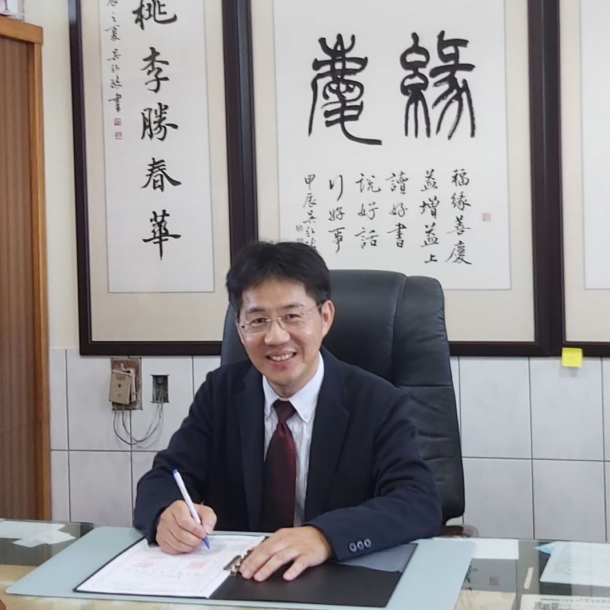

米
I · 來
The Bowl-of-Rice Spirit
斗米建校的精神
"Built when no one had much — a bowl of rice from each home, given for children who weren't yet theirs."
育華是在大家都沒有什麼的年代，由地方一家一斗米捐出來的學校。校長一再提醒孩子：「努力比豐盛更重要，社區是大家一起建出來的。」
A small school doesn't mean a small life — here, every child is seen, every day. 小校不代表小格局——在這裡，每一個孩子，每一天，都被看見。

The steward of Yuhua Elementary — a small coastal school in Yongxing Village, born in 1957 from the Bowl-of-Rice Movement, where neighbours pooled what little they had so the village's children would not have to grow up unschooled.
育華國小座落於芳苑鄉永興村沿海，1957 年由地方「斗米建校」而生。陳志明校長承襲了那份「為了孩子湊一把」的厚情，帶著全校 6 個班級的孩子，在海風與田畝裡持續辦學。
Yuhua's identity is not built on one slogan but on three threads the principal returns to whenever he speaks about the school: where we came from, where we stand, and how we grow each child. 育華的辦學精神不是一句口號，而是校長一再說起的三條主軸：我們從哪裡來、我們站在什麼地方、以及我們怎麼一個一個把孩子養大。
Yuhua serves a single coastal village in Fangyuan Township — agricultural and fisheries by livelihood, with the famous Wanggong oyster flats just minutes from the schoolyard. The school district is contained: just one village, one school, every family known. 育華國小是芳苑鄉永興村的單村學區小學，村民務農兼採蚵，著名的王功蚵棚就在校門外幾分鐘的距離。學區小、家家相識——這正是育華「每個孩子都被看見」最實際的條件。
Founded in 1957, Yuhua emerged from the Bowl-of-Rice Movement after the 1948 floods washed away the bridge that village children used to cross to attend Fangyuan Elementary. Lessons first began in 1951 in the village chief's hallway; today's school was built one rice donation at a time. 育華 1957 年正式獨立設校。1948 年大水沖毀通往芳苑國校的小橋後，1951 年謝三雄老師調來，課堂從洪村長家走廊開始；1952 年洪丁丑村長發起「斗米建校」，由各家戶捐出一斗米募款建校。今天的育華，是一斗一斗米堆出來的。